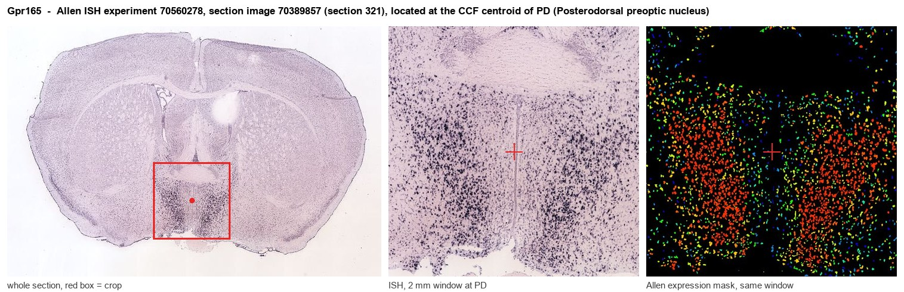
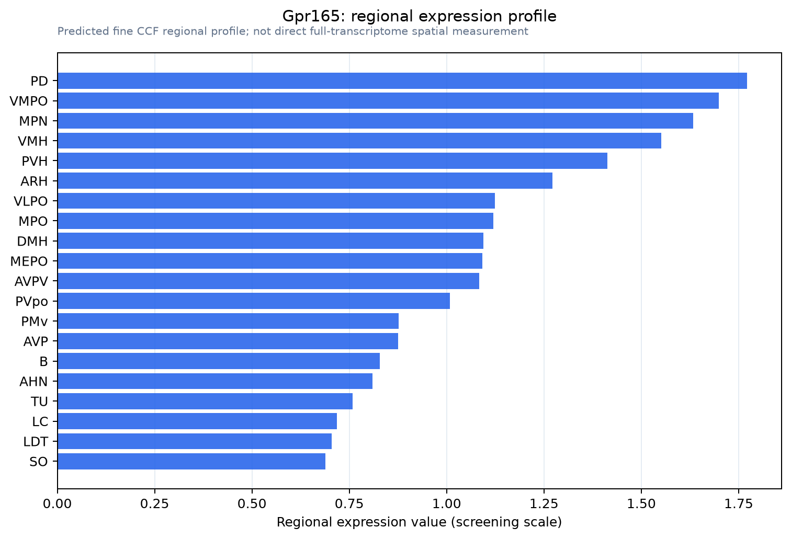

Gpr165
G-protein coupled receptor 165
Spatial tier: REGION_BIASED · Class: GPCR · Top region: PD (Posterodorsal preoptic nucleus) · Positive regions: 33/554
43.2Discovery Score
40.0Targetability Score
CEvidence grade C
What this means: Gpr165: fine CCF profile is region-biased toward PD (top regions: PD, VMPO, MPN, VMH, PVH); this is a discovery lead, not direct proof.
Function in PD: evidence, prediction, innovation
- Gene function
- GPR165 is an X-linked orphan class A G protein-coupled receptor with no identified endogenous ligand, no assigned G protein coupling and almost no published functional characterisation. It is predicted from sequence to be a peptide-binding rhodopsin-family receptor.
- Region function
- The posterodorsal preoptic nucleus lies in the sexually dimorphic medial preoptic region, which controls gonadotropin release, sexual and parental behaviour, thermoregulation and sleep through projections to the arcuate/median eminence, AVPV and hypothalamic-brainstem targets.
- Published in this region
- none No region-specific literature found. There is effectively no primary literature on GPR165 in any tissue; the closest context is that the preoptic region containing PD is densely populated by sexually dimorphic, hormone-responsive peptidergic neurons such as the Moxd1-positive population described by Tsuneoka 2017.
- Predicted function
- Prediction: an orphan peptide-type GPCR concentrated in the posterodorsal preoptic nucleus most plausibly serves as a neuropeptide or steroid-regulated modulator of the sexually dimorphic preoptic circuits that gate reproductive and parental behaviour and thermoregulatory set point. Chemogenetic or knockdown experiments in Gpr165-expressing preoptic cells should alter mating, pup retrieval or thermoregulatory/torpor-like responses in a sex-dependent way. Deorphanising the receptor and confirming its cell type by RNAscope with Esr1, Gal and Moxd1 is the required first step.
- Innovation
- ★★★★★ 5/5 A receptor with essentially zero literature sitting in one of the most behaviourally consequential and well-tooled hypothalamic regions.
- Tools
- none known for the receptor itself; the nucleus is accessible via Esr1-Cre, Gal-Cre and Moxd1-based targeting plus AAV-shRNA/CRISPR knockdown.
- References
Direct evidence located at the region

Allen ISH experiment 70560278, section image 70389857 (section 321): the section that contains the CCF centroid of Posterodorsal preoptic nucleus according to the Allen image-to-atlas alignment (reference_to_image), with a 2 mm window around that point. Left: whole section, red box = window. Middle: ISH signal. Right: Allen's expression-mask view of the same window. open this image in the Allen viewer
Look it up yourself: Allen Mouse Brain ISH for Gpr165Allen reference atlas: PD (structure 914)ABC Atlas MERFISH viewer(in the ABC Atlas choose dataset MERFISH-C57BL6J-638850-CCF, colour cells by gene "Gpr165" or by parcellation_substructure "PD")All genes confined to PD + 3-D brain
Direct spatial evidence
MERFISH REGION LOCATOR

Regional expression figure

Predicted WMB × fine-CCF profile; not direct full-transcriptome spatial measurement.
Spatial profile
Evidence and specificity
- Evidence status
- PREDICTED_FINE
- Direct sources
- None; predicted localization only
- Exclusive threshold
- 12 positive regions out of 554
- Spatial specificity
- 0.316
- Top-region fraction
- 0.046
- Filter status
- PASS
Interpretation limits
- Cell-type-to-region projection is imputed expression, not direct spatial measurement.
- Adult reference atlases do not establish stability across age, sex, strain, state, or disease.
- Transcript abundance does not guarantee protein abundance or genetic-tool performance.